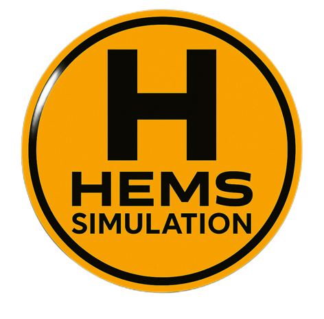

The Virtual HEMS platform, introduced by **SRP Consulting Group, LLC, **is designed specifically for simulating aeromedical and Helicopter Emergency Medical Services (HEMS) flights.
• Innovative Foundation: The platform provides a custom solution developed from the ground up, departing from traditional "Virtual Airlines" that rely on older software and generic fixed-wing templates.
• Data Integrity Mandate: New users must adhere to the rule that the value of the platform scales with the quality of input data. "Garbage In, Garbage Out” means consistent and accurate data provided directly benefits overall analytics, statistics, and the user experience.
The application is a fully functional Desktop & Mobile Application. Users are required to use Google Chrome on Windows or Mac operating systems to ensure proper function and installation.
• Installation: Users must visit the application link and select “Add to Home Screen” from the share menu for installation on both desktop computers and mobile devices.
Key UI Features: The platform hosts several key features accessible via the user interface:
- Virtual HEMS Operations Center: Provides a real-time overview of mission status, system health, and assigned crew, along with operational alerts.
- Real-time Flight Metrics: Displays "Awaiting Flight Data" status. Users must ensure their simulator plugin is running and authenticated to receive real-time data or log data manually.
- Quick Actions: Includes functions to Initiate Dispatch Call, Open Comms Center, and access the Mission Planner.
- Communication Center: Supports real-time communication via virtual Radio Channels (Dispatch, Hospital, Ground Crew, Medical Team) and a Dispatch Channel for text messages.
- Advanced HEMS Mission Planner: Allows detailed configuration and route optimization, setting the Mission Type (Scene Call or Interfacility Transfer), Departure Base, Pickup/Destination Hospital, Patient Information (Name, Age, Weight, Condition), Weather Conditions (Wind Speed/Direction, Visibility, Temperature), and Required Equipment (IV Fluids, Medications, etc.).
- Mission Map: Provides a visual representation of HEMS operations in Western Pennsylvania, including legends for Trauma Centers, General Hospitals, and Active Aircraft.
The platform supports both Microsoft Flight Simulator (MSFS) and X-Plane, though the delivery of custom visual assets differs between the two simulation environments.
- X-Plane Scenery Focus: The scenery is designed for X-Plane (Version 10.21 or later) utilizing necessary freeware scenery object libraries including
- The creator has personally developed 22 different hospitals in extreme detail for X-Plane, which are highly integral to the structure of the experience. These hospital locations are detailed, listing ICAO codes, coordinates, and physical heliport data (dimensions, surface, lighting, and left traffic pattern).
- MSFS Scenery Context: Microsoft Flight Simulator uses Bing Maps data and Azure AI to generate photorealistic 3D models of buildings, terrain, and trees via cloud computing and photogrammetry. This reliance on AI-generated scenery means that custom building designs created for X-Plane are rendered pointless on the MSFS platform.
- Operational Assets: Dedicated Plugins for Installation & Authentication are available for MSFS and X-Plane HEMS integration. These plugins are being developed to allow for real-time syncing with the sim and the ability to push a generated mission directly to the application's UI.
Allegheny Health Network (AHN) academic medical system. Helicopters operated by Metro Aviation, Inc.
Provides emergency helicopter and critical care ground transport 24/7 across a four-state area (Western PA, SE Ohio, N West Virginia, W Maryland). Uses 5 helicopters based at locations like Clarion Hospital and Cannonsburgh Hospital.
Users must complete a comprehensive flight logbook for each HEMS call, ensuring highly accurate data entry as the simulator mandates precise mission tracking. The required crew complement for the EC135 T2+ logbook is a Pilot IFR
This section contains operational information for the EC 135 P2+/T2+ Rotorcraft for X-Plane, supplemented by essential general helicopter flying and safety principles.
The simulated EC135 is a highly accurate simulation copy of the original helicopter, utilizing a plugin to simulate complex systems, including the Central Panel Display System (CPDS).
A. Limitations (Crucial for Flight Planning)
B. Flight Control and Avionics Systems
• Cyclic Stick: Controls disc attitude and, subsequently, the position over the ground. Includes the Force Trim Release (FTR) button, BEEP TRIM four-way switch (for trimming attitude), and SAS/AP CUT to disengage stability augmentation/autopilot. Pressing FTR with rotor RPM < 80% resets all trims to neutral.
• Collective Pitch: Controls height and blade pitch. Requires coordination with cyclic, pedals, and throttle due to secondary effects (yaw, RPM changes). Includes light switches and the Go Around (GA) button.
• CPDS (Central Panel Display System): Consists of the Caution and Advisory Display (CAD) and Vehicle and Engine Multifunction Display (VEMD). Displays all necessary engine and vehicle parameters, cautions, advisories, and the First Limit Indicator (FLI) page.
• AFCS (Automatic Flight Control System) / Autopilot: Engaged by the AP button, starting in A.TRIM mode(maintains actual flight attitude). Pilot can override AFCS using the TRIM REL button. AFCS includes upper modes like ALT, IAS, VS, HDG, APP, and NAV.
A. Aerodynamic Control Principles
Force/Effect
Description and Control
Lift and Thrust
Lift opposes weight and acts perpendicular to the resultant relative wind. Thrust is the horizontal force component used to accelerate or decelerate the helicopter, derived from the tilted rotor disk.
Drag
Total Drag is the sum of Profile Drag (frictional resistance/form drag), Induced Drag (vortex drag, decreases with airspeed), and Parasite Drag (airframe resistance, increases with speed squared).
Gyroscopic Precession
The main rotor acts like a gyroscope. A force applied to the rotor disk results in maximum deflection occurring approximately 90° later in the direction of rotation.
Translational Lift/ETL
Effective Translational Lift (ETL) occurs at about 16 to 24 knots when the rotor disk completely outruns old vortices and works in undisturbed air, greatly increasing efficiency and lift. This causes the nose to rise (blowback), requiring forward cyclic correction.
Induced Flow (Downwash)
Downward flow of air through the rotor blades. As induced flow increases (e.g., in a hover), the Angle of Attack (AOA) decreases, which reduces lift.
Coning
The upward conical shape of the rotor disk caused by the balance between centrifugal force (outward)and lift (upward). If RPM decreases, centrifugal force shrinks, and the coning angle increases, threatening rotor failure.
B. Manoeuvring and Control Techniques
• Straight-and-Level Flight: Achieved by balancing lift (Collective) against weight, and thrust (Cyclic tilt) against drag. Once stabilized, make minimum adjustments, noting the required power setting.
• Climbing/Descending: The primary sequence used is ATTITUDE, POWER, TRIM (APT) for climb, or POWER, ATTITUDE, TRIM (PAT) for descent. Correction of yaw using pedals is mandatory during collective power changes.
• Hovering: Cyclic controls drift in the horizontal plane; Collective maintains altitude; Pedals control heading. Overcontrolling can exaggerate pendular action.
• Turning Flight: Bank angle is controlled with cyclic. As bank increases, the vertical lift component decreases, requiring increased collective pitch (AOA) to maintain altitude.
C. Advanced Handling and Safety Management
Piloting proficiency requires continuous safety focus, adherence to procedures, and active risk mitigation:
1. Airworthiness and Checks: Pre-flight preparation is fundamental; pilots must confirm the helicopter is safe and fit for flight, including helicopter documentation and required equipment. Use of checklists (e.g., R44 Normal Checklist structure) is essential for procedures (Pre-Engine Start, Startup, Runup, Shutdown).
2. Control Handover: Must be unambiguous. Instructor to student: "You have control" (Student responds: "I have control"). Student to instructor: "I have control" (Instructor responds: "You have control").
3. Threat and Error Management (TEM): TEM is an operational concept providing a structured approach to identifying and managing threats and errors that may affect flight safety.
4. External Threats (Anticipated/Unanticipated): Includes inclement weather, congested airspace, obstacles, wires, or system malfunctions.
1. Countermeasures: Plan countermeasures, prioritize tasks, and manage workload. The pilot’s highest priority sequence is Aviate, Navigate, Communicate.
2. High-Risk Maneuvers: Maneuvers such as Autorotation, Engine-Out Landings (EOLs), Vertical Climb over Obstacles, and Steep Approaches should be approached cautiously. Use the HASEL check (Height, Area, Security, Engine, Lookout) before high-risk maneuvers.
5. Simulation Fidelity Standards: The virtual platform aims to emulate the high-fidelity required for advanced instruction, reflecting requirements such as:
1. Cockpit Fidelity: Full-scale replica with functional controls.
2. Dynamic Response: Numerical accuracy and dynamic response sufficient for the required level.
3. Sensory Integration: Relative responses of motion, visual, and cockpit instruments coupled closely to provide integrated sensory cues.
4. Aerodynamic Modeling: Simulation of systems, including ground effect and hover programming.
---
In essence, operating in this HEMS environment requires pilots to marry technical precision (logging, adherence to EC135 limits) with expert safety management, ensuring that every simulated mission mirrors the high stakes and disciplined approach of real-world emergency aviation.
What is the geographic scope and hospital infrastructure covered by the simulated flight environment?
The simulated flight environment covers a broad geographic scope stretching across multiple states, primarily focused on the operational area of Helicopter Emergency Medical Services (HEMS) providers Allegheny Health Network's (AHN) LifeFlight and STAT MedEvac,,.
The geographic area served by the LifeFlight helicopters includes western Pennsylvania, southeastern Ohio, northern West Virginia, and western Maryland,. STAT MedEvac further expands the reach, operating 18 helicopter base sites across Pennsylvania, Maryland, New York, Ohio, and the District of Columbia,. The simulation specifically maps "Western Pennsylvania HEMS Operations".
Hospital Infrastructure and Base Sites
The simulated environment includes a substantial network of hospital landing zones, heliports, and operational bases:
1. STAT MedEvac Bases: STAT MedEvac operates 18 helicopter base sites,. Examples of these bases include locations in Pennsylvania, Ohio, New York, Maryland, and Washington, D.C.:
1. Pennsylvania: The organization's primary base of operations is at the Allegheny County Airport in West Mifflin,,. Other Pennsylvania bases include The Washington Hospital, Clarion County Airport, UPMC Altoona, and Armstrong County Memorial Hospital,.
2. Ohio: Bases are located at Youngstown Elser Metro Airport and Jefferson County Airpark,.
3. Maryland and D.C.: Bases include Johns Hopkins Hospital in Baltimore, MD, and Children's National Hospital (SkyBear) in Washington, D.C.,,.
2. AHN LifeFlight Bases: AHN LifeFlight operates five primary bases across Western Pennsylvania,:
1. Cannonsburgh Hospital (Washington County).
2. Clarion Hospital (Clarion County).
3. Indiana Regional Medical Center (Indiana County).
4. Pittsburgh/Butler Regional Airport (Butler County).
5. Rostraver Airport (Westmoreland County).
3. Hospital Scenery and Heliports: The infrastructure covered includes numerous hospitals and heliports detailed within the Western PA HEMS scenery package, categorized by their location, elevation, surface type, and placement (ground or rooftop),,,. Prominent facilities in the Pittsburgh, PA area, among others, include:
1. Rooftop Heliports: Allegheny General Hospital, Jefferson Hospital, UPMC Children's Hospital of Pittsburgh, UPMC Mercy, and UPMC Presbyterian,.
2. Ground Heliports: Canonsburg Hospital, Forbes Hospital, and Clarion Hospital,.
3. Out-of-State Facilities: The simulated hospitals also include facilities in Ohio, such as the Cleveland Clinic Main Campus,.
The planning tools embedded in the virtual environment are configured to utilize hospitals such as Allegheny General Hospital and Allegheny Valley Hospital for routing complex missions.
Copyright 2026
SRP Consulting Group, LLC
All Rights, Honors, & Privilages Reserved